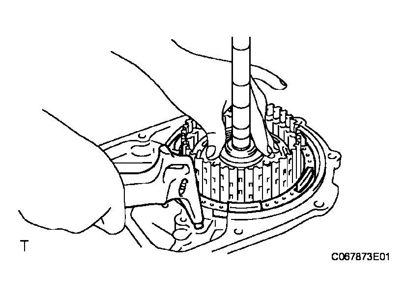

Intermediate Shaft: Disassembly
WARNING: This page is about a different variant/trim than selected.
- REMOVE REVERSE CLUTCH DISC
- Using a screwdriver, remove the snap ring.
- Remove the flange, 2 discs and 2 plates.
- INSPECT REVERSE CLUTCH DISC (See INSPECTION )
- REMOVE DIRECT CLUTCH DISK
- Using a screwdriver, remove the snap ring.
- Remove the 3 plates, flange and 3 discs.
- INSPECT DIRECT CLUTCH DISK (See INSPECTION )
- REMOVE DIRECT CLUTCH RETURN SPRING SUBASSEMBLY
- Using SST and a press, remove the snap ring and direct clutch return spring from the intermediate shaft.
- INSPECT DIRECT CLUTCH RETURN SPRING SUBASSEMBLY (See INSPECTION )
- REMOVE DIRECT CLUTCH PISTON SUB-ASSEMBLY
- Install the direct and reverse clutch on the transaxle rear cover.
- Apply compressed air (392 kPa, 4.0 kgf/cm2
, 57 psi) to the transaxle rear cover to remove the direct clutch drum and direct clutch piston.

Courtesy of © TOYOTA, LICENSE AGREEMENT TMS1002NOTE:- Blowing air may cause the piston to jump out. When removing the piston, hold it with your hand using a waste cloth.
- Take care not to splash ATF when blowing air.
HINT:
When the piston cannot be removed because it is slanted, either blow air again with the protruding side pushed, or remove the piston using needle nose pliers with vinyl tape on its tip.
- INSPECT DIRECT CLUTCH PISTON SUB-ASSEMBLY (See INSPECTION )
- REMOVE DIRECT CLUTCH DRUM SUB-ASSEMBLY
- Put a matchmark on the direct clutch drum at the same position with the cutout of the intermediate shaft.
- Apply compressed air into the oil hole shown in the illustration and remove the direct clutch drum from the intermediate shaft.
- INSPECT INTERMEDIATE SHAFT SUB-ASSEMBLY (See INSPECTION )
- REMOVE DIRECT CLUTCH PISTON O-RING
- Using a screwdriver, remove the 2 O-rings.
- REMOVE DIRECT CLUTCH DRUM O-RING
- Using a screwdriver, remove the 2 O-rings.